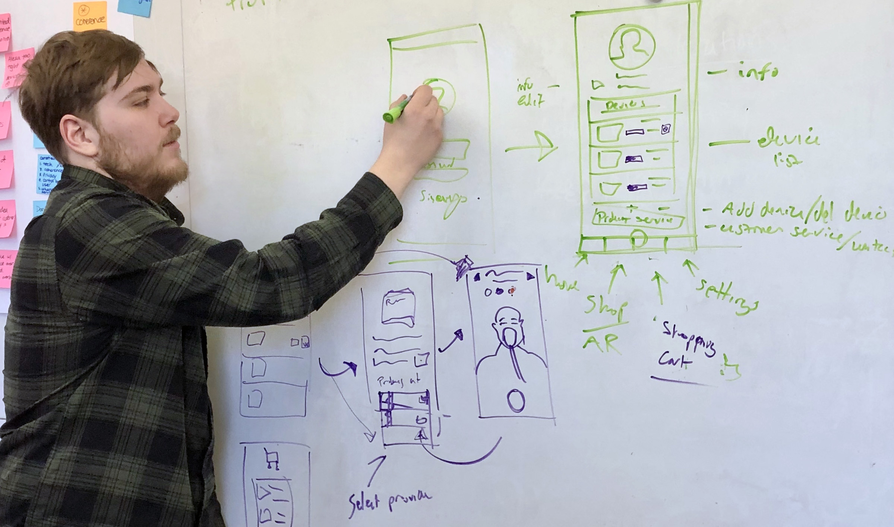

Project Details
When - Spring 2020
Duration - Approx. 16 weeks and ongoing
Course - MHCI Capstone, Carnegie Mellon University
Skills - UX design + Service Design + Interaction Design + UX research
Teammates - Stephanie Wang, Cora Wang, and Lena Li
Scope
Sleep apnea is considered a hidden health problem in America. Millions of Americans suffer from the disease and those who do seek treatment face a treacherous journey through the opaque healthcare system. Many sleep apnea patients end up quitting their therapy because of the lack of support and struggles that come with the lifestyle changes and mask. This project explores how connecting ResMed and patients through a mobile application could create a better service ecosystem for both parties.
Sleep Apnea patients lack quality service and customization with HMEs. This leads to uncomfortable patients and many abandoning their treatments.
User's lack choice in mask customization and apnea products
HME's offer limited service to help apnea patients be comfortable
ResMed lacks channels to gain data about apnea mask usage
ResMed lacks services to directly sell sleep apnea products to customers
Solution: An AR application that enables customization and direct purchase of ResMed masks and accessories.
Fresh Air gives users the ability to purchase sleep apnea masks, accessories, and other products directly through the app. It manages the life cycle of users products, uses AR for face fittings, and has an AR visualize/customize feature for patients to co-create their own personal masks with ResMed.
Process fo this project
There was no easy way to begin the process of exploring, understanding, and experimenting in the music streaming space. With so many opportunities and experiences to cover, our team decided to employ a large range of both primary and secondary research methods as we tackled the question of “what is the future of music streaming and listening?” The following chronological sections feature a brief summary for each method and the most important results to have been produced from them. For those who are interested in a more thorough walkthrough of our research process, an academic research paper that covers the same material but in more detail can be found at this link
Interviewing domain experts at Carnegie Mellon helped us understand what HCI looks like in the future
In addition to primary research, our team reached out to academics, music professionals, and other leaders in their fields. By interviewing individuals in academia, we were able to discover ways to approach designing for a service like Amazon Music and Alexa, picture the future of sensors and other contextual-awareness technologies, and obtain advice on how to approach a project of this scale. By interviewing musicians and other creatives, we uncovered pain points for both artists and users that were valuable in considering during our future solutioning.
An Emphaisis on Context Awareness
Users can review their cart contents and view final pricing. They are also able to edit the contents in their cart. If they swipe up, payment information will come up and they can submit to process. Once they press submit, their orders will be immediately added to their profile page and the status of the life cycle will automatically start once delivered.
More Multi Modal Experiences
Users can review their cart contents and view final pricing. They are also able to edit the contents in their cart. If they swipe up, payment information will come up and they can submit to process. Once they press submit, their orders will be immediately added to their profile page and the status of the life cycle will automatically start once delivered.
Greater accuracy in user algorithims
Users can review their cart contents and view final pricing. They are also able to edit the contents in their cart. If they swipe up, payment information will come up and they can submit to process. Once they press submit, their orders will be immediately added to their profile page and the status of the life cycle will automatically start once delivered.
Direct Channels between artists and listeners
Users can review their cart contents and view final pricing. They are also able to edit the contents in their cart. If they swipe up, payment information will come up and they can submit to process. Once they press submit, their orders will be immediately added to their profile page and the status of the life cycle will automatically start once delivered.
Exploring a possible future of music utilizing CUI's and Voiceflow
With these first few insights in mind, we came across another question. What is a possible future with music? Around this time, we had a pretotype assignment that got us really excited to jump into making with our hands, failing fast, learning from doing. And that’s exactly what we did.
Testing the "Bartender" model showed us that the formality of CUIs is context dependent
What we found was that context again was key in influencing the type of experience users wanted with their VUIs. Like when someone was “chilling out”, an informal VUI became a welcomed companion. However, the informal VUI changed peoples’ perceptions of what the VUI was capable of. Because it was so different from what they knew of agents today, our fake VUI seemed “smarter.” This highlighted potential challenges that could come from exploring and utilizing VUI as part of our solution later on, and it’s something we’re keeping in mind into the summer as well.
Users are very specific when it comes to learning more about artists or songs
What we found was that context again was key in influencing the type of experience users wanted with their VUIs. Like when someone was “chilling out”, an informal VUI became a welcomed companion. However, the informal VUI changed peoples’ perceptions of what the VUI was capable of. Because it was so different from what they knew of agents today, our fake VUI seemed “smarter.” This highlighted potential challenges that could come from exploring and utilizing VUI as part of our solution later on, and it’s something we’re keeping in mind into the summer as well.
Moving the focus to understanding our users
With these first few insights in mind, we came across another question. What is a possible future with music? Around this time, we had a pretotype assignment that got us really excited to jump into making with our hands, failing fast, learning from doing. And that’s exactly what we did.
Guerilla Research led us to understand how users feel about music streaming today
After synthesizing all of our findings, one of the main insights we came across was a perceived loss of human touch in music recommendation and music services. There were some individuals we interviewed who had major pushback to algorithms, saying “I wouldn’t take a recommendation from an algorithm” or “I don’t trust it to know what I want.” But why. It mainly had to do with the experiences they had had with DJs or other live radio shows. In radio, users grow with DJs, and you religiously follow the ones that tend to play music that fits with what you like. With algorithms, you’re given one, and it grows with you over time, but that’s about it.

Our synthesis activity led us to the key sentiments among users
After synthesizing all of our findings, one of the main insights we came across was a perceived loss of human touch in music recommendation and music services. There were some individuals we interviewed who had major pushback to algorithms, saying “I wouldn’t take a recommendation from an algorithm” or “I don’t trust it to know what I want.” But why. It mainly had to do with the experiences they had had with DJs or other live radio shows. In radio, users grow with DJs, and you religiously follow the ones that tend to play music that fits with what you like. With algorithms, you’re given one, and it grows with you over time, but that’s about it.
"Hang the Algorithm, Bring Back the DJs"
Users can review their cart contents and view final pricing. They are also able to edit the contents in their cart. If they swipe up, payment information will come up and they can submit to process. Once they press submit, their orders will be immediately added to their profile page and the status of the life cycle will automatically start once delivered.
"I want to see and controll the algorithim"
Users can review their cart contents and view final pricing. They are also able to edit the contents in their cart. If they swipe up, payment information will come up and they can submit to process. Once they press submit, their orders will be immediately added to their profile page and the status of the life cycle will automatically start once delivered.
“I Can’t Own a Streamed Song”
Users can review their cart contents and view final pricing. They are also able to edit the contents in their cart. If they swipe up, payment information will come up and they can submit to process. Once they press submit, their orders will be immediately added to their profile page and the status of the life cycle will automatically start once delivered.
“Where are my Grateful dead fans at?”
Users can review their cart contents and view final pricing. They are also able to edit the contents in their cart. If they swipe up, payment information will come up and they can submit to process. Once they press submit, their orders will be immediately added to their profile page and the status of the life cycle will automatically start once delivered.
Reframing to the IRL Listening Experince
With these first few insights in mind, we came across another question. What is a possible future with music? Around this time, we had a pretotype assignment that got us really excited to jump into making with our hands, failing fast, learning from doing. And that’s exactly what we did.
Diary Studies and Directed Stortelling revealed how music is used as a multi-faceted tool throughout a user's day
With these first few insights in mind, we came across another question. What is a possible future with music? Around this time, we had a pretotype assignment that got us really excited to jump into making with our hands, failing fast, learning from doing. And that’s exactly what we did.
Directed storytelling also revealed where the most friction within IRL music listening lies
With these first few insights in mind, we came across another question. What is a possible future with music? Around this time, we had a pretotype assignment that got us really excited to jump into making with our hands, failing fast, learning from doing. And that’s exactly what we did.
Selecting Music for Others in Social Situations
Users can review their cart contents and view final pricing. They are also able to edit the contents in their cart. If they swipe up, payment information will come up and they can submit to process. Once they press submit, their orders will be immediately added to their profile page and the status of the life cycle will automatically start once delivered.
Having to pick music for yourself
Users can review their cart contents and view final pricing. They are also able to edit the contents in their cart. If they swipe up, payment information will come up and they can submit to process. Once they press submit, their orders will be immediately added to their profile page and the status of the life cycle will automatically start once delivered.
Streaming is not context-aware enough
Users can review their cart contents and view final pricing. They are also able to edit the contents in their cart. If they swipe up, payment information will come up and they can submit to process. Once they press submit, their orders will be immediately added to their profile page and the status of the life cycle will automatically start once delivered.
Exploring potential futures to solve IRL listening friction
With these first few insights in mind, we came across another question. What is a possible future with music? Around this time, we had a pretotype assignment that got us really excited to jump into making with our hands, failing fast, learning from doing. And that’s exactly what we did.

Streaming is not context-aware enough
Users can review their cart contents and view final pricing. They are also able to edit the contents in their cart. If they swipe up, payment information will come up and they can submit to process. Once they press submit, their orders will be immediately added to their profile page and the status of the life cycle will automatically start once delivered.
Streaming is not context-aware enough
Users can review their cart contents and view final pricing. They are also able to edit the contents in their cart. If they swipe up, payment information will come up and they can submit to process. Once they press submit, their orders will be immediately added to their profile page and the status of the life cycle will automatically start once delivered.
Using prototypes to narrow down into the project primary focuses
Early draft exploring the ecosystem prior to secondary research conducted in the domain. Our first draft highly over simplified the stakeholder's relationships
An image of our stakeholder drafting session during our studio hours with me drawing in value exchanges

The complicated ecosystem of sleep apnea stakeholders
Patients who suffer from sleep apnea not only go through numerous doctors to get their therapy prescriptions, they also have to go through Home Medical Equipment providers (HME) to receive the actual CPAP machines, masks, and subscriptions for parts. Because HME's have razor thin margins and only are concerned with distributing medical products, many sleep apnea patients do not end up with the best products. Or they lack abilities to customize their treatment. We want to create a direct connection between ResMed and patients
Reverse assumption exercise led us to a direct sales application to help customers get custom tailored sleep apnea product service
Using a UX problem ideation technique, we looked at our stakeholder map and wrote out what we felt were the most important assumptions the team was making about the ecosystem. From there, we reversed the phrases and then thought how we could leverage a digital solution to make this reverse assumption a reality.
Assumptions
ResMed sells products through HME providers
Patients need to go to a specialist for figuring out the right product for them
ResMed masks are uncomfortable to wear in bed
Reverse Assumptions
ResMed does not sells products through HME providers
Patients do not need to go to a specialist for figuring out the right product for them
ResMed masks are not uncomfortable to wear to bed
Service Solution
ResMed sells direct to consumer; A service that is centered around treatment.
Patients can use an app that helps users choose the right sleep apnea products
An app that helps users find comfortable masks to wear sleeping
Hand sketching the flow of the app helped us visualize a customer's journey
A photograph during our flow diagramming session in the MHCI studio space. It served as a framework for our application throughout development
Wire-framing the profile, product list, and product page
Low fidelity prototyping focused on understanding how we wanted product scrolling w/ filters, customer profile, and product page to look. Since these were key for the client as a direct point of sale.


Creating proof of concept with SparkAR
Being that we wanted to add a visualization and customization feature for users to see their ResMed products, I wanted to create a proof of concept in SparkAR to explore this functionality. As well as to test how users might respond to the customization shopping aspect.

Refining the AR page for interaction and fidelity
As we developed the style of the application and visual language, our AR flow grew to a more minimal interaction experience. Testing with SparkAR also gave us potential user insights on our interaction assumptions


{kind=link}
{kind=link}
{kind=link}
{kind=link}
{kind=link}
{kind=link}
{kind=link}
{kind=link}
{kind=link}
{kind=link}
{kind=link}
Hi-Fi product screens
The final high fidelity product was created as a pitch to the client. It showcased the main features of the application and the aesthetic style we were trying to achieve. It also served as a minimum viable product to display the user flow and test on future users.

Title screen
The title screen shows off the ResMed logo and gives the option to sign up or log in. Users can also change basic settings of the app or ask questions on sign up page before starting.

Creating a new profile
Once users choose to create a new profile, users will be guided through a set of pre screen questions. They serve as a way to help set up users profiles quicker. Not only does it gather basic data about their sleep apnea condition, it also takes that data and recommends products for you based on your answers.

Setting face profile with AR
Once user's are finished with the pre-screen questions, they are prompted to use their phone to capture images of their face. These are used to help determine what size their face is as to proscribe the right mask for them. This then will automatically be updated on their profile and will be auto filled in on future product searching.

Customer's profile
The profile page stores basic customer information, customer's mask/ face information, and their preferences as proscribed from the pre-screen questions. It also shows the life span of current products they own. By tapping the arrows, users will be able to see more details about their products and add replacements to the cart directly.

Product catalog
The dual product layout maximizes the space for products to be shown. It includes filters at the top to find certain products quicker, it automatically shows products based on your recommendations, and lets you know which products have AR visualization/customization. Users can tap the cards to go into the product detail page.

AR customization
The AR page allows customers to swipe between different products and to visualize the products directly on their face. It also gives users the ability to tap different components to customize the colors of the parts. Once they have a selection they like, they can add it directly to their cart and it will take them to the cart review page.

Checkout
Users can review their cart contents and view final pricing. They are also able to edit the contents in their cart. If they swipe up, payment information will come up and they can submit to process. Once they press submit, their orders will be immediately added to their profile page and the status of the life cycle will automatically start once delivered.
Redefining the service ecology, data generation, and moving forward
We dubbed final solution Fresh Air because we felt given the complicated stakeholder process for patients, this new direct ResMed to patient service would be a "breath of fresh air". Redefining the service ecology for ResMed could potentially yield them more customers, numerous amounts of passive data about customer usage, and more qualitative active data, which could lead to better product solutions. Moving forward, we hope to add more features to the application and roll in other sleep apnea products besides masks and related accessories.
Passive data
The duration of time users are using AR application and
The application usage data - time, location, duration
Frequency suers are using the application
Frequency of color and product customization
Active data
Face sizes of users
User preferences for sleep apnea masks and products
User purchasing information
Sleep habits and cloud data from CPAP machines

Conclusion
Reception to the project was considered very positive. Users and critiquers responded positively to the micro-interactions, the visual language, the AR functionality, and over all product strategy our team took. Criticism centered around lack of clarity in the on-boarding process, not enough product information on the profile, and the need for a feature that could tie in patients physicians to their therapy product choices.